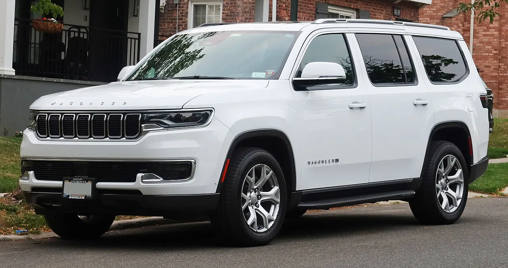

▲ 이번 리콜 대상 중 가장 많은 11만 3,647대를 차지하는 지프 그랜드 체로키(WL) ⓒ Kevauto, Wikimedia Commons (CC BY-SA 4.0)
타이어 공기압을 확인하려고 굳이 차에서 내려 밟아볼 필요 없이, 계기판 경고등 하나만 보면 된다는 편리함. 그 편리함을 믿었던 지프 오너 20만 명 이상이 이제는 그럴 수 없게 됐다.
스텔란티스(FCA US)가 미국에서 지프 그랜드 체로키, 그랜드 체로키 L, 왜고니어, 그랜드 왜고니어 등 총 20만 1,976대를 대상으로 타이어 공기압 모니터링 시스템(TPMS) 무상 리콜을 발표했다. 오너들이 가장 신뢰하고 즐겨 쓰는 편의 기능 중 하나인 TPMS가, 정작 타이어 공기압이 위험 수준으로 떨어져도 경고등을 켜지 못할 수 있다는 게 골자다. 자동차 전문매체 카스쿱스(Carscoops)를 비롯해 더트루스어바웃카스, 카버즈 등 복수 매체가 이를 보도했다.
1. 무슨 일이 있었나 — 20만 대 넘는 지프에서 발견된 TPMS 결함
스텔란티스는 최근 미국 도로교통안전국(NHTSA)에 TPMS 관련 리콜 서류를 제출했다. NHTSA 리콜 캠페인 번호는 26V559이며, 대상은 2024~2026년식 지프 그랜드 체로키·그랜드 체로키 L·그랜드 체로키 4xe(플러그인 하이브리드)·왜고니어·그랜드 왜고니어까지 총 5개 라인업이다. 확인된 총 대수는 20만 1,976대로, 200만 대가 아니라 20만 대 규모지만 그래도 최근 리콜 중에서는 적지 않은 규모다.
| 차종 | 연식 | 대상 대수 |
|---|---|---|
| 그랜드 체로키 | 2024~2026 | 113,647대 |
| 그랜드 체로키 L | 2024~2026 | 57,456대 |
| 왜고니어 | 2024~2025 | 16,456대 |
| 그랜드 왜고니어 | 2024~2026 | 3,046대 |
| 그랜드 체로키 4xe(PHEV) | 2024~2026 | 526대 |
가장 많은 물량을 차지하는 건 스텔란티스의 주력 중형 SUV인 그랜드 체로키(WL)로, 전체 리콜 대수의 절반을 훌쩍 넘는 11만 3,647대가 해당한다. 그 뒤를 3열 SUV인 그랜드 체로키 L이 5만 7,456대로 잇는다. 프리미엄 대형 SUV인 왜고니어·그랜드 왜고니어 형제도 예외는 아니다.

▲ 지프 그랜드 체로키 후면부. 이번 리콜은 2024~2026년식 그랜드 체로키 전 라인업에 걸쳐 있다 ⓒ Kevauto, Wikimedia Commons (CC BY-SA 4.0)
2. 왜 하필 TPMS인가 — 오너들이 가장 신뢰하는 편의 기능
TPMS는 화려하지 않지만 오너 만족도가 가장 높은 편의 기능 중 하나로 꼽힌다. 타이어 공기압을 손수 점검할 필요 없이, 공기압이 적정 수준 아래로 떨어지면 계기판에 경고등이 자동으로 뜨는 구조다. 미국에서는 2000년 발효된 TREAD 법(타이어 결함·리콜 및 문서화 관련법) 이후 모든 신차에 TPMS 장착이 의무화될 만큼 안전과 직결된 장치이기도 하다.
📍 TPMS 경고등이 안 켜지면 왜 위험한가
공기압이 부족한 채로 계속 주행하면 타이어 옆면이 과도하게 휘어지며 열이 쌓이고, 심한 경우 타이어가 파열될 수 있다. 특히 고속도로처럼 속도가 높은 구간에서는 타이어 파열이 곧바로 차량 제어 상실로 이어질 위험이 있다. TPMS 경고등은 이런 상황을 운전자가 가장 먼저 알아챌 수 있는 장치인데, 이번 결함은 정작 그 경고 기능 자체가 작동하지 않을 수 있다는 게 문제다.
이번 결함이 가볍게 볼 수 없는 이유도 여기에 있다. 단순히 편의 기능 하나가 먹통이 되는 수준이 아니라, 타이어 관련 사고를 예방하기 위한 안전장치 자체가 무력화될 수 있다는 점에서 안전 리콜로 분류됐다.
3. 정확한 원인 — 무선주파수 허브 모듈 소프트웨어 오류
결함의 원인은 차량에 탑재된 무선주파수(RF) 허브 모듈의 소프트웨어 오류로 확인됐다. RF 허브 모듈은 각 타이어에 장착된 TPMS 센서로부터 무선으로 공기압 정보를 받아 계기판에 전달하는 역할을 한다. 그런데 소프트웨어 결함으로 인해 이 모듈이 저장된 기준 공기압 값을 잃어버리거나, 타이어 공기압 데이터를 제대로 갱신하지 못하는 경우가 발생할 수 있다는 게 스텔란티스 측 설명이다.
✅ 결함 증상, 이렇게 나타날 수 있다
· 타이어 공기압이 안전 기준치 아래로 떨어져도 계기판 저압 경고등이 켜지지 않음
· RF 허브 모듈이 저장하고 있던 기준 공기압 값 자체를 소실
· 실제 공기압과 무관하게 표시값이 갱신되지 않고 멈춰 있는 경우 발생 가능
· 오너가 육안·촉감으로 직접 확인하지 않는 한 이상 여부를 알기 어려움
즉 센서 자체나 타이어 하드웨어의 문제가 아니라, 소프트웨어가 정보를 제대로 처리·표시하지 못하는 게 핵심이다. 그만큼 부품 교체 없이 소프트웨어 업데이트만으로 해결이 가능하다는 게 그나마 다행인 부분이다.

▲ 3열 SUV 그랜드 체로키 L. 이번 리콜 대상 중 두 번째로 많은 5만 7,456대가 해당한다 ⓒ MercurySable99, Wikimedia Commons (CC BY-SA 4.0)
4. 해결책과 일정 — 딜러 무상 소프트웨어 업데이트
다행히 부품 교체가 필요 없는 소프트웨어성 결함이라, 조치 자체는 비교적 간단하다. 스텔란티스는 대상 차량 딜러망을 통해 RF 허브 모듈 소프트웨어를 무상으로 업데이트하도록 조치할 예정이다. 오너 입장에서는 별도 비용 부담 없이 딜러 방문만으로 해결할 수 있다.
| 항목 | 내용 |
|---|---|
| 조치 방법 | 딜러 방문 후 RF 허브 모듈 소프트웨어 무상 업데이트 |
| 오너 통보 시작 | 2026년 9월 29일부터 우편 통보, 이후 순차 발송 |
| 비용 | 전액 무상 |
| NHTSA 캠페인 번호 | 26V559 |
해당 차량을 보유한 오너라면 9월 말부터 우편 통보를 받을 가능성이 높다. 통보를 기다리지 않고 지금 바로 차대번호(VIN)로 리콜 대상 여부를 확인하고 싶다면 미국 NHTSA 공식 리콜 조회 페이지에서 확인할 수 있다. NHTSA 리콜 리포트(26V559) 바로가기
5. 배경 — 스텔란티스, 올해만 리콜 수십 건째
이번 TPMS 리콜은 스텔란티스가 2026년 들어 발행한 여러 건의 리콜 중 하나다. 카버즈 보도에 따르면 스텔란티스는 올해 북미 시장에서 포드에 이어 두 번째로 많은 리콜을 발행한 완성차 업체로, 지금까지 33건의 리콜을 제출했다. 여기에는 지프 랭글러·글래디에이터 약 100만 대를 포함한 대규모 리콜과, 하이브리드 차량 70만 대 규모 리콜 등이 포함돼 있었다.
왜고니어와 그랜드 왜고니어는 스텔란티스가 프리미엄 대형 SUV 시장 공략을 위해 야심 차게 내놓은 라인업이라는 점에서, 이번 리콜이 브랜드 이미지에 미칠 영향에도 관심이 쏠린다. 특히 왜고니어는 지프 브랜드 내에서도 최상위 가격대를 형성하는 모델이라, TPMS 같은 기본적인 안전 기능에서 결함이 발견됐다는 점이 더 아쉬운 대목이다.

▲ 프리미엄 대형 SUV 지프 왜고니어. 이번 리콜에는 왜고니어 1만 6,456대, 그랜드 왜고니어 3,046대가 포함됐다 ⓒ Kevauto, Wikimedia Commons (CC BY-SA 4.0)
6. 요약
스텔란티스가 2024~2026년식 지프 그랜드 체로키·그랜드 체로키 L·그랜드 체로키 4xe·왜고니어·그랜드 왜고니어 등 20만 1,976대를 대상으로 TPMS 무상 리콜을 발표했다. NHTSA 캠페인 번호는 26V559이며, 무선주파수 허브 모듈 소프트웨어 오류로 타이어 공기압이 위험 수준으로 떨어져도 계기판 경고등이 켜지지 않을 수 있다는 게 원인이다.
부품 교체 없이 딜러에서 소프트웨어를 무상으로 업데이트받는 것으로 해결되며, 오너 통보는 2026년 9월 29일부터 순차적으로 시작된다. 대상 차량 중 가장 많은 물량은 11만 3,647대의 그랜드 체로키이며, 프리미엄 라인업인 왜고니어·그랜드 왜고니어도 포함됐다.
해당 차량을 보유하고 있다면 우편 통보를 기다리기보다, NHTSA 공식 리콜 조회 페이지에서 차대번호(VIN)로 미리 대상 여부를 확인하고 딜러 예약을 서두르는 게 안전하다.